Last updated: May 26, 2011
Installation and Configuration
Appendix B: Jython and CPython Differences
Appendix C: Licenses and Acknowledgements
Note that Cron registration information is persistent data. This means that if you register with the Cron Service, if you shutdown STAF and restart it (even if you reboot the machine), the prior registration information will still be active. When STAF starts, it reads in the previous Cron registration information, and will execute the registered STAF commands at the specified time interval(s).
Note that the Cron service uses its machine's Operating System date/time information to determine the current date/time in relation to the registered requests. Users of the Cron service must ensure that the machine on which the Cron service is running has the correct Operating System date/time (and that it correctly updates the current date/time relative to Daylight Savings Time).
SERVICE <Name> LIBRARY JSTAF EXECUTE <Cron Jar File Name>
[OPTION <Name[=Value]>]...
[PARMS OLDVARRESOLUTION]
where:
Examples:
SERVICE Cron LIBRARY JSTAF EXECUTE {STAF/Config/STAFRoot}/services/cron/STAFCron.jar
SERVICE Cron LIBRARY JSTAF EXECUTE {STAF/Config/STAFRoot}/services/cron/STAFCron.jar \
OPTION JVMName=Cron OPTION JVM=C:\j2sdk1.5.0\bin\java
SERVICE Cron LIBRARY JSTAF EXECUTE {STAF/Config/STAFRoot}/services/cron/STAFCron.jar PARMS OLDVARRESOLUTION
MACHINE specifies the name of the machine where the command will be executed. This option will not resolve STAF variables (unless the OLDVARRESOLUTION parameter is specified when registering the Cron service). When the specified time interval occurs, the value of MACHINE will not be evaluated as a python string.
PYTHONMACHINE specifies the name of the machine where the command will be executed. This option will not resolve STAF variables (unless the OLDVARRESOLUTION parameter is specified when registering the Cron service). When the specified time interval occurs, the value of PYTHONMACHINE will be evaluated as a python string.
SERVICE specifies the name of the service to be executed. This option will not resolve STAF variables (unless the OLDVARRESOLUTION parameter is specified when registering the Cron service). When the specified time interval occurs, the value of SERVICE will not be evaluated as a python string.
PYTHONSERVICE specifies the name of the service to be executed. This option will not resolve STAF variables. When the specified time interval occurs, the value of PYTHONSERVICE will be evaluated as a python string.
REQUEST specifies the request to be executed. This option will not resolve STAF variables (unless the OLDVARRESOLUTION parameter is specified when registering the Cron service). When the specified time interval occurs, the value of REQUEST will not be evaluated as a python string. This option will handle private data.
PYTHONREQUEST specifies the request to be executed. This option will not resolve STAF variables. When the specified time interval occurs, the value of PYTHONREQUEST will be evaluated as a python string. This option will handle private data.
PREPARE specifies Python code which will be executed when the specified time interval occurs. This code will be executed prior to the PYTHONMACHINE, PYTHONSERVICE, and PYTHONREQUEST options being evaluated as python strings. This option will not resolve STAF variables. If the Python code sets the variable STAFCronSubmit to any string other than 'true', then the request will not be submitted.
DESCRIPTION specifies a description of the registration. It is for informational purposes only. This option will resolve STAF variables.
MINUTE specifies the exact minute(s) that the request executes. The valid values are 0 - 59. You can specify either * (an asterisk) or ANY, meaning all valid values, or a list of elements separated by commas. An element is either a number or an inclusive range, indicated by two numbers separated by a minus sign (such as 1-15).
HOUR specifies the exact hour(s) that the request executes. The valid values are 0 - 23. You can specify either * (an asterisk) or ANY, meaning all valid values, or a list of elements separated by commas. An element is either a number or an inclusive range, indicated by two numbers separated by a minus sign (such as 8-17).
DAY specifies the exact day(s) that the request executes. The valid values are 1 - 31. You can specify either * (an asterisk) or ANY, meaning all valid values, or a list of elements separated by commas. An element is either a number or an inclusive range, indicated by two numbers separated by a minus sign (such as 1-2).
MONTH specifies the exact month(s) that the request executes. The valid values are 1 - 12. You can specify either * (an asterisk) or ANY, meaning all valid values, or a list of elements separated by commas. An element is either a number or an inclusive range, indicated by two numbers separated by a minus sign (such as 5-6).
WEEKDAY specifies the exact weekday(s) that the request executes. The valid values are 0 - 6 (Sunday = 0, ....). You can also specify the textual weekday ("Sunday", etc.). You can specify either * (an asterisk) or ANY, meaning all valid values, or a list of elements separated by commas. An element is either a number or an inclusive range, indicated by two numbers separated by a minus sign (such as 1-15).
ONCE indicates that the STAF command should only be executed one time. After the specified time interval has occurred and the STAF command has been submitted, the ID for this request will be unregistered.
ENABLED specifies that the command will be enabled when it is registered. This means that the command will be submitted when the specified time triggers occur. This is the default if the ENABLED or DISABLED options are not specified.
DISABLED specifies that the command will be disabled when it is registered. This means that the command will not be submitted when the specified time triggers occur.
Note: At least one of the time interval options (MINUTE, HOUR, DAY, MONTH, WEEKDAY) must be specified in a REGISTER request.
Syntax: STAF local CRON REGISTER MACHINE local SERVICE PROCESS REQUEST "START COMMAND notepad" HOUR 1
Syntax: STAF local CRON REGISTER MACHINE local SERVICE PROCESS REQUEST "START COMMAND notepad" HOUR 1 WEEKDAY Sunday
Syntax: STAF local CRON REGISTER MACHINE local SERVICE stax REQUEST "EXECUTE FILE c:/tests/startall.xml" MONTH 12 DESCRIPTION "Kick off all of the regression tests"
Note that the registration in this example would only result in the command being executed the next time the month changes to 12. So, if you registered this command on Dec 5, 2003, it would not be executed until 12AM Dec 1 2004.
Syntax: STAF local CRON REGISTER MACHINE local SERVICE stax REQUEST "EXECUTE FILE c:/tests/startall.xml" MONTH 12 DAY "*"
Syntax: STAF local CRON REGISTER MACHINE server1 SERVICE stax REQUEST "EXECUTE FILE c:/automate/updateStatus.xml" WEEKDAY "Monday-Friday" HOUR "8, 12, 15-18, 0"
Syntax:
STAF local CRON REGISTER MACHINE server1 SERVICE STAX REQUEST "EXECUTE FILE /tests/TestA.xml ARGS \"^{'machine': 'client1', 'testDir': '/tests'}\"" HOUR 0
On Windows, we need to also escape the "^" with another "^" if submitted from the Windows command prompt (cmd.exe) because cmd.exe eats one of the carets when enclosed in double quotes:
STAF local CRON REGISTER MACHINE server1 SERVICE STAX REQUEST "EXECUTE FILE /tests/TestA.xml ARGS \"^^{'machine': 'client1', 'testDir': '/tests'}\"" HOUR 0
STAF local CRON REGISTER MACHINE server1 SERVICE STAX PYTHONREQUEST "'EXECUTE FILE /tests/TestA.xml ARGS \"{\'machine\': \'client1\', \'testDir\': \'/tests\'}\"'" HOUR 0
STAF local CRON REGISTER MACHINE server1 SERVICE STAX PYTHONREQUEST "'EXECUTE FILE /tests/TestA.xml ARGS \"%s\"' % (args)" PREPARE "args = {'machine': 'client1', 'testDir': '/tests'}" HOUR 0
Actually, it's usually easier to register a more complex request like this that uses Python code via the CronUI instead of the command line because then you don't have to bother so much with escaping quotes. See the Registration Example using Python and Prepare Script section for an example of how to register this STAF command via the Cron User Interface.
ID specifies the Cron ID which is to be unregistered.
MACHINE specifies the machine for which Cron requests should be listed.
LONG specifies to list more detailed information about each Cron request.
| Definition of map class STAF/Service/Cron/CronID | |||
|---|---|---|---|
| Description: This map class represents a registered Cron request. | |||
| Key Name | Display Name | Type | Format / Value |
| cronID | ID | <String> | |
| description | Description (Desc) | <String> | <None> | |
| machine | Machine | <String> | |
| service | Service | <String> | |
| request | Request | <String> | Private data will be masked. |
| minute | Minute | <String> | <None> | |
| hour | Hour | <String> | <None> | |
| dayOfMonth | Day of Month (Day) | <String> | <None> | |
| month | Month | <String> | <None> | |
| dayOfWeek | Day of Week (Weekday) | <String> | <None> | |
| once | Once | <String> | 'true' | 'false' |
| Definition of map class STAF/Service/Cron/CronIDShort | |||
|---|---|---|---|
| Description: This map class represents a registered Cron request with general information. | |||
| Key Name | Display Name | Type | Format / Value |
| cronID | ID | <String> | |
| description | Description | <String> | <None> | |
| machine | Machine | <String> | |
| service | Service | <String> | |
| request | Request | <String> | Private data will be masked. |
| Definition of map class STAF/Service/Cron/CronIDLong | |||
|---|---|---|---|
| Description: This map class represents a registered Cron request with detailed information. | |||
| Key Name | Display Name | Type | Format / Value |
| cronID | ID | <String> | |
| description | Description | <String> | <None> | |
| machine | Machine | <String> | |
| machineType | Machine Type | <String> | 'Literal' | 'Python' |
| service | Service | <String> | |
| serviceType | Service Type | <String> | 'Literal' | 'Python' |
| request | Request | <String> | Private data will be masked. |
| requestType | Request Type | <String> | 'Literal' | 'Python' |
| prepareScript | Prepare Script | <String> | <None> | Private data will be masked. |
| minute | Minute | <String> | <None> | |
| hour | Hour | <String> | <None> | |
| dayOfMonth | Day of Month | <String> | <None> | |
| month | Month | <String> | <None> | |
| dayOfWeek | Day of Week | <String> | <None> | |
| once | Once | <String> | 'true' | 'false' |
| enabled | Enabled | <String> | 'true' | 'false' |
Syntax: STAF local CRON LIST
Result: If the request is submitted from the command line, the result, in the verbose format, could look like:
ID Desc Machine Service Request Minute Hour Day Month Weekday Once
-- ------ ------- ------- ----------- ------ ------ ------ ------ ------- -----
1 <None> client1 PROCESS START COMMA <None> 1 <None> <None> <None> false
.austin ND notepad
.ibm.co
m
2 Run th server1 STAX EXECUTE FIL <None> 8,12,1 <None> <None> 1,2,3,4 false
e STAX E c:/automa 5,16,1 ,5
job t te/updateSt 7,18,0
o upda atus.xml
te sta
tus
3 Run al server1 STAX EXECUTE FIL <None> 8 <None> <None> <None> false
l regr E c:/tests/
ession runAll.xml
tests
4 <None> local PROCESS START COMMA <None> 18 <None> <None> 5 true
ND notepad
Syntax: STAF local CRON LIST SHORT
Result: If the request is submitted from the command line, the result, in the verbose format, could look like:
ID Description Machine Service Request
-- ------------ ---------------------- ------- --------------------------------
1 <None> client1.austin.ibm.com PROCESS START COMMAND notepad
2 Run the STAX server1 STAX EXECUTE FILE c:/automate/updateS
job to upda tatus.xml
te status
3 Run all regr server1 STAX EXECUTE FILE c:/tests/runAll.xml
ession tests
4 <None> local PROCESS START COMMAND notepad
Syntax: STAF local CRON LIST LONG MACHINE server1
Result: If the request is submitted from the command line, the result, in the verbose format, could look like:
[
{
ID : 2
Description : Run the STAX job to update status
Machine : server1
Machine Type : Literal
Service : STAX
Service Type : Literal
Request : EXECUTE FILE c:/automate/updateStatus.xml
Request Type : Literal
Prepare Script: <None>
Minute : <None>
Hour : 8,12,15,16,17,18,0
Day of Month : <None>
Month : <None>
Day of Week : 1,2,3,4,5
Once : false
Enabled : true
}
{
ID : 3
Description : Run all regression tests
Machine : server1
Machine Type : Literal
Service : STAX
Service Type : Literal
Request : EXECUTE FILE c:/tests/runAll.xml
Request Type : Literal
Prepare Script: <None>
Minute : <None>
Hour : 8
Day of Month : <None>
Month : <None>
Day of Week : <None>
Once : false
Enabled : true
}
]
ID specifies the Cron ID which is to be triggered.
SCRIPT defines Python code to be executed. You may specify any number of SCRIPT options. They will be executed in the order specified, and will be executed prior to the registration's PREPARE, PYTHONMACHINE, PYTHONSERVICE, AND PYTHONREQUEST values are evaluated.
Upon successful return:
| Definition of map class STAF/Service/Cron/Trigger | |||
|---|---|---|---|
| Description: This map class represents information about the submitted STAF command. | |||
| Key Name | Display Name | Type | Format / Value |
| machine | Machine | <String> | |
| requestNumber | Request Number | <String> | |
Syntax: STAF local CRON TRIGGER ID 6
Result: If the request is submitted from the command line, the result, in the verbose format, could look like:
Machine : dave2268.austin.ibm.com Request Number: 1583
Syntax: STAF local LOG QUERY MACHINE {STAF/Config/MachineNickname} LOGNAME cron CONTAINS "[ID=6] [dave2268.austin.ibm.com:1583]"
Result: If the request is submitted from the command line, the result, in the verbose format, could look like:
20060809-14:18:52 Info [ID=6] [dave2268.austin.ibm.com:1583] Submitted a STAF
command. Triggered manually Submitted STAF command: STA
F local var RESOLVE STRING {STAF/Config/MachineNickname}
20060809-14:18:52 Info [ID=6] [dave2268.austin.ibm.com:1583] Completed a STAF
command. RC=0, Result=testmachine1
Syntax:
STAF local CRON TRIGGER ID 12 SCRIPT "platform = 'win32'" SCRIPT "version = '3.x'"
Result: If the request is submitted from the command line, the result, in the verbose format, could look like:
Machine : dave2268.austin.ibm.com Request Number: 2021
ID specifies the Cron ID which is to be enabled.
ID specifies the Cron ID which is to be disabled.
VERSION specifies to display the version level of the Cron service or the version level of Jython packaged with the Cron service.
JYTHON specifies to display the version level of Jython packaged with the Cron service.
Syntax: VERSION
Result: 3.4.0
Syntax: VERSION JYTHON
Result: 2.5.2-staf-v1
Note that Cron registration information is persistent data. This means that if you register with the Cron Service, if you shutdown STAF and restart it (even if you reboot the machine), the prior registration information will still be active. When STAF starts, it reads in the previous Cron registration information, and will execute the registered STAF commands at the specified time interval(s).
In Cron V3.2.0, the format of this data was modified. Persistent registration data for versions prior to Cron V3.2.0 will automatically be migrated to the new format. Note that the new format can not be used with versions of Cron prior to V3.2.0.
The Cron service maintains a machine log where it writes information about the STAF commands that it has submitted. It is important to check the log to determine the results of STAF commands submitted by the Cron service. The Cron service will log an entry when the following occurs:
[ID=<xx>] [<machine>, <handleName>]where <xx> is the ID that was registered, <machine> is the machine that originated the REGISTER request, and <handleName> is the name of the handle that originated the REGISTER request. The level of the log entry will be Info.
[ID=<xx>] [<machine>:<requestNumber>]where <xx> is the ID for which the STAF command was submitted, <machine> is the machine on which the STAF command was submitted, and <requestNumber> is the request number for the STAF command. The level of the log entry will be Info.
[ID=<xx>] Python errorwhere <xx> is the ID for which the Python interpreter encountered an error. The level of the log entry will be Error.
[ID=<xx>] Error submitting a STAF command.where <xx> is the registration ID of the STAF command that was submitted. The level of the log entry will be Error.
[ID=<xx>] ID is disabled. STAF command not submitted.where <xx> is the ID for which the time trigger matched. The level of the log entry will be Info..
[ID=<xx>] [<machine>:<requestNumber>]where <xx> is the ID for which the STAF command was executed, <machine> is the machine on which the STAF command was executed, and <requestNumber> is the request number for the STAF command. The log entry will include the RC and Result from the STAF command. If the RC is 0, the level of the log entry will be Pass; otherwise the level of the log entry will be Fail.
[ID=<xx>] [<machine>:<requestNumber>]where <xx> is the ID for which the STAF command was executed, <machine> is the machine on which the STAF command was executed, and <requestNumber> is the request number for the STAF command. The log entry will include the RC and Result from the STAF process. If the RC is 0, the level of the log entry will be Pass; otherwise the level of the log entry will be Fail.
[ID=<xx>] [<machine>, <handleName>]where <xx> is the ID that was unregistered, <machine> is the machine that originated the UNREGISTER request, and <handleName> is the name of the handle that originated the UNREGISTER request. The level of the log entry will be Info.
[ID=<xx>] [<machine>, <handleName>]where <xx> is the ID that was enabled, <machine> is the machine that originated the ENABLE request, and <handleName> is the name of the handle that originated the ENABLE request. The level of the log entry will be Info.
[ID=<xx>] [<machine>, <handleName>]where <xx> is the ID that was disabled, <machine> is the machine that originated the DISABLE request, and <handleName> is the name of the handle that originated the DISABLE request. The level of the log entry will be Info.
The [ID=<xx>] and [ID=<xx>] [<machine>:<requestNumber>] tags in the log entries can be useful when querying the log. They can be used with the CONTAINS option of the log service's QUERY request.
The logname for the Cron service is the name under which the service is registered.
Here is an example of what a Cron service log on the local machine could look like (shown via a request from the command line in the table format):
C:\>STAF local log QUERY MACHINE {STAF/Config/MachineNickname} LOGNAME cron
Response
--------
Date-Time Level Message
----------------- ----- -------------------------------------------------------
20060808-16:08:29 Info [ID=1] [local://local, STAF/Client] Registered a STAF c
ommand. Register request: REGISTER DESCRIPTION :20:Get
the STAF version MACHINE local SERVICE misc REQUEST ver
sion MINUTE 9 ONCE
20060808-16:08:29 Info [ID=2] [local://local, STAF/Client] Registered a STAF c
ommand. Register request: REGISTER DESCRIPTION :17:Run
java -version MACHINE local SERVICE process REQUEST :61
:start command java parms -version returnstdout stderrt
ostdout MINUTE 10
20060808-16:08:29 Info [ID=3] [local://local, STAF/Client] Registered a STAF c
ommand. Register request: REGISTER DESCRIPTION :20:Pyth
on runtime error MACHINE local SERVICE misc REQUEST ver
sion PREPARE a=b MINUTE 11
20060808-16:09:01 Info [ID=1] [dave2268.austin.ibm.com:2664] Submitted a STAF
command. Triggers: minute[9] Submitted STAF command: ST
AF local misc version
20060808-16:09:01 Info [ID=1] [local://local, STAF/SERVICE/cron] Unregistered
a STAF command.
20060808-16:09:01 Pass [ID=1] [dave2268.austin.ibm.com:2664] Completed a STAF
command. RC=0, Result=3.1.4.1
20060808-16:10:01 Info [ID=2] [dave2268.austin.ibm.com:2681] Submitted a STAF
command. Triggers: minute[10] Submitted STAF command: S
TAF local process start command java parms -version ret
urnstdout stderrtostdout
20060808-16:10:01 Pass [ID=2] [dave2268.austin.ibm.com:2681] Completed a STAF
command. RC=0, Result=134
20060808-16:10:01 Pass [ID=2] [dave2268.austin.ibm.com:2681] Process completed
. Process info: {key=, handle=134, rc=0, endTimestamp=2
0060808-16:10:01, fileList=[{rc=0, data=java version "1
.5.0" Java(TM) 2 Runtime Environment, Standard Edition
(build 1.5.0-b64) Java HotSpot(TM) Client VM (build 1
.5.0-b64, mixed mode) }]}
20060808-16:11:01 Error [ID=3] Python error in the PREPARE value. PREPARE: a=b
PyException: Traceback (innermost last): File "<st
ring>", line 1, in ? NameError: b Processing registr
ation: ID: 3 machine: local service: misc reque
st: version prepare: a=b
20060808-16:11:25 Info [ID=2] [local://local, STAF/Client] Unregistered a STAF
command.
20060808-16:11:27 Info [ID=3] [local://local, STAF/Client] Unregistered a STAF
command.
Here is an example of only displaying the log records for a particular registration ID:
C:\>STAF local LOG QUERY MACHINE {STAF/Config/MachineNickname} LOGNAME cron CONTAINS [ID=2]
Response
--------
Date-Time Level Message
----------------- ----- -------------------------------------------------------
20060808-16:08:29 Info [ID=2] [local://local, STAF/Client] Registered a STAF c
ommand. Register request: REGISTER DESCRIPTION :17:Run
java -version MACHINE local SERVICE process REQUEST :61
:start command java parms -version returnstdout stderrt
ostdout MINUTE 10
20060808-16:10:01 Info [ID=2] [dave2268.austin.ibm.com:2681] Submitted a STAF
command. Triggers: minute[10] Submitted STAF command: S
TAF local process start command java parms -version ret
urnstdout stderrtostdout
20060808-16:10:01 Info [ID=2] [dave2268.austin.ibm.com:2681] Completed a STAF
command. RC=0, Result=134
20060808-16:10:01 Info [ID=2] [dave2268.austin.ibm.com:2681] Process completed
. Process info: {key=, handle=134, rc=0, endTimestamp=2
0060808-16:10:01, fileList=[{rc=0, data=java version "1
.5.0" Java(TM) 2 Runtime Environment, Standard Edition
(build 1.5.0-b64) Java HotSpot(TM) Client VM (build 1
.5.0-b64, mixed mode) }]}
20060808-16:11:25 Info [ID=2] [local://local, STAF/Client] Unregistered a STAF
command.
Here is an example of only displaying the log records for a particular registration ID, machine, and STAF request number:
C:\>STAF local LOG QUERY MACHINE {STAF/Config/MachineNickname} LOGNAME cron CONTAINS "[ID=1] [dave2268.austin.ibm.com:2664]"
Response
--------
Date-Time Level Message
----------------- ----- -------------------------------------------------------
20060808-16:09:01 Info [ID=1] [dave2268.austin.ibm.com:2664] Submitted a STAF
command. Triggers: minute[9] Submitted STAF command: ST
AF local misc version
20060808-16:09:01 Info [ID=1] [dave2268.austin.ibm.com:2664] Completed a STAF
command. RC=0, Result=3.1.4.1
Here is an example of only displaying the error log records, and using the -verbose option so that the error output is more readable:
C:\>STAF -verbose local LOG QUERY MACHINE {STAF/Config/MachineNickname} LOGNAME cron LEVELMASK error
Response
--------
[
{
Date-Time: 20060808-16:11:01
Level : Error
Message : [ID=3] Python error in the PREPARE value.
PREPARE:
a=b
PyException:
Traceback (innermost last):
File "<string>", line 1, in ?
NameError: b
Processing registration:
ID: 3
machine: local
service: misc
request: version
prepare: a=b
}
]
The Cron service lets uses the Python scripting language for variable and expression evaluation for the following REGISTER and TRIGGER request options:
This allows the Cron service to take advantage of the powerful and easy-to-use features of Python. The Cron service uses Jython 2.5.2 to execute Python code. Jython is a version of Python written entirely in Java that runs under any compliant Java Virtual Machine (JVM).
Python variable names must follow the Python variable naming conventions. In Python, variable names come into existence when you assign values to them, but there are a few rules to follow when picking names for variables.
Note: Python lets you use the names of Python built-in functions as variable names. However, we recommend that you don't use the name of a Python built-in function as a variable name because you may want to use the Python built-in function at some point when triggering your registration. Following are names of Python built-in functions: abs, basestring, bool, callable, chr, classmethod, cmp, compile, complex, delattr, dict, dir, divmod, enumerate, eval, execfile, file, filter, float, getattr, globals, hasattr, hash, help, hex, id, input, int, isinstance, issubclass, iter, len, locals, long, map, max, min, object, oct, open, ord, pow, property, range, raw_input, reduce, reload, repr, round, setattr, slice, staticmethod, str, sum, super, tuple, type, unichr, unicode, vars, xrange, zip.
Python string constants can be enclosed in single or double quotes, which allows embedded quotes of the opposite flavor.
For example, the following two lines of Python code do exactly the same thing. They assign a string constant (literal) "CoolTest" to the value of a variable named testName.
testName = "CoolTest1" testName = 'CoolTest1'However, the following line is not the same. It assigns the value of a variable named CoolTest1 to the value of a variable named testName. If this was not what you intended and a variable named CoolTest1 does not exist, a PythonException will be raised and logged in the service log.
testName = CoolTest1
Say, you wanted to use a Python variable named machName in a STAF service request string. Your Python code could look like:
request = 'RELEASE POOL MachinePool ENTRY %s' % (machName)where the %s indicates a String format (and can also be used for decimal format, etc.), and where the value of the machName variable would replace the %s marker.
So, if the value of variable machName is 'client1.company.com', after being evaluated by Python, the request variable's value would be:
'RELEASE POOL MachinePool ENTRY client1.company.com'
Here are a couple of examples of how you might use Python code in the PREPARE and PYTHONREQUEST options when submitting a REGISTER request to the Cron service:
STAF local CRON REGISTER MACHINE server1 SERVICE ResPool PYTHONREQUEST "'RELEASE POOL MachinePool ENTRY %s' % (machName)" PREPARE "machName = 'client1.company.com'" HOUR 22
STAF local CRON REGISTER MACHINE local SERVICE PROCESS PYTHONREQUEST "'START SHELL COMMAND %s RETURNSTDOUT STDERRTOSTDOUT' % (STAFUtil.wrapData(command))" PREPARE "from com.ibm.staf import STAFUtil; command = 'C:/MyApp/myApp.exe %s' % (STAFCronID)" WEEKDAY Saturday HOUR 0
Actually, it's usually easier to register more complex requests like these that use Python code via the Cron User Interface (CronUI) instead of the command line because then you don't have to bother so much with escaping quotes and you can have multiple lines of Python code. See the Registration Example using Python and Prepare Script section for an example of how to register a STAF command via the CronUI.
Refer to the "References" section for where to get more information about Jython and Python.
If you are already a CPython programmer, or are hoping to use CPython
code under Jython, refer to the
"Jython and CPython Differences" section for information about
differences in the two implementations of Python.
The Cron service provides a User Interface (CronUI) to simplify interaction with the Cron service. The CronUI is especially useful when registering complex STAF commands with Python code because it helps avoid some issues that you have when registering via the command line by reducing the need for escaping quotes and allows you to easily enter multiple lines of Python code via a text box for the PREPARE option, The CronUI also allows you to modify existing registrations (without having to unregister and the re-register the updated STAF command), and view the Cron service's log.
Note that when viewing the Cron service's log, the Cron User Inteface utilizes the STAFLogViewer class to display the logs. For more information on how to use the STAFLogViewer, refer to section "3.11 Class STAFLogViewer" of the STAF Java User's Guide ( http://staf.sourceforge.net/current/STAFJava.htm).
java -jar STAFCron.jar
If the STAFCron.jar file is not in the current directory where you are executing this command, then you will need to specify the full path (or the path relative to the current directory) to the STAFCron.jar file.
Note that to run this command, the STAFCron.jar file does not need to be included in your CLASSPATH.
java com.ibm.staf.service.cron.CronUI
Note that to run this command, the STAFCron.jar file must be included in your CLASSPATH.
A User Interface will be displayed which allows you to interact with
the Cron service.
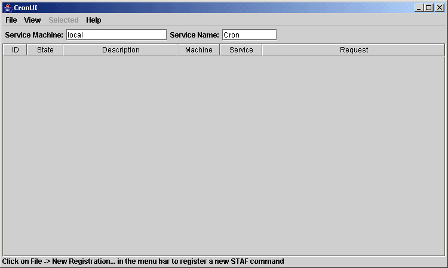
The main CronUI window displays a table of all of the currently registered STAF commands. The screen capture above shows what the table would look like if there are no registrations. The window is comprised of the following components (from to to bottom):
The File menu bar contains the following menu items:
The View menu bar contains the following menu items:
The Selected menu bar will only be enabled if there is a row currently selected in the registration table, and contains the following menu items:
Note that all of the "Selected" menu items are also available in a pop-up menu when you right click on a row in the registration table, and they perform the exact same functions as the "Selected" menu bar items.
The Help menu bar contains the following menu items:
The "Service Machine" text field allows you to specify the hostname of the machine where the Cron service is running. The default is "local".
The "Service Name" text field allows you to specify the service name for which the Cron service was configured. The default is "Cron".
After changing either of these values, you can press the "Enter" key to refresh the table, or click on "View" in the menu bar, and then select "Refresh".
The registration table displays the current registrations for the Cron service you specified in the service configuration fields (for Service Machine and Service Name). It is refreshed every time you click on "View" in the menu bar and selecte "Refresh", as well as when you change the Service Machine or Service Name fields and press "Enter".
It is also refreshed whenever you add a new registration, unregister a registration, edit a registration, or copy an existing registration to a new registration.
The registration table has the following columns:
The status bar shows informational messages. Here are the possible messages:
To submit a new registration, click on "File" in the menu bar and then
select "New Registration...". You will see the following window:
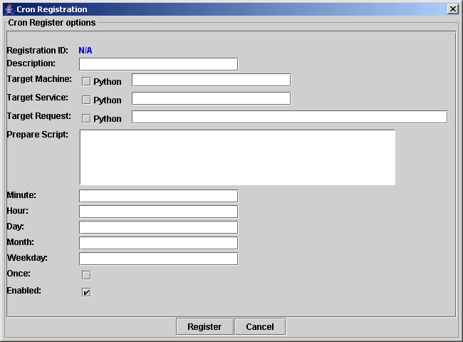
This window allows you to specify the data for the registration:
Note that at least one of the time interval options (Minute, Hour, Day, Month, Weekday) must be specified.
To get help on any of these options while using CronUI, mover the cursor over the text field or checkbox and a tool tip will be displayed.
Fill in the appropriate information for the STAF command you wish to have
executed. For example, to have a STAX job executed at 1:00AM every day:
Click on the "Register" button and you will see that the STAF command has
been assigned a unique registration ID, and that it is listed in the
registration table.
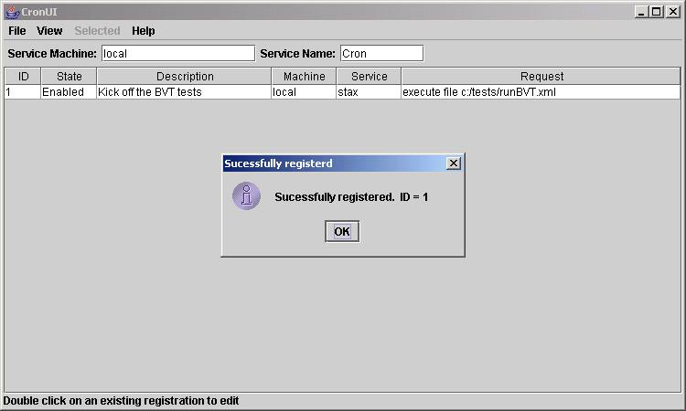
To register a more complex STAF command, you may find it easier to use the CronUI instead of submitting a REGISTER request to the Cron service via the command line. This is especially true for STAF commands that use Python. Also, if you select to specify the request using Python and use the "Prepare Script" field, you usually don't have to escape as many quotes.
This section shows an example of registering a more complex STAF command using the CronUI. It will use the same example that was discussed in the REGISTER section that registered a STAF command via the command line to execute STAX job /tests/TestA.xml via the STAX service on machine server1 every day at midnight and passed the following argument map to the STAX job: {'machine': 'client1', 'testDir': '/tests'}
Remember that a STAF variable reference is denoted by surrounding the variable in curly braces, e.g. {MyVar}. So, since the request contains a "{" which is not being used to denote a STAF variable reference, this example selects "Python" for the target request so that STAF variable resolution will not be performed. If "Python" was not selected for the target request, then the "{" would need to be escaped with a caret, "^", so that no STAF variable resolution would be performed. This example also uses the "Prepare Script" field to construct the STAX EXECUTE request using Python.
The following is an example of how you could register the following STAX EXECUTE command to run every day at midnight:
STAF server1 STAX EXECUTE FILE "/tests/TestA.xml" ARGS "{'machine': 'client1', 'testDir': '/tests'}"
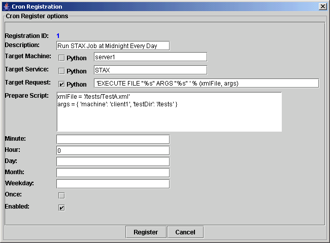
To edit a registration, double click on its row in the registration table, click on "Selected" in the menu bar and select "Edit", or right-click on its row in the registration table, and select "Edit" in the popup menu.
For example, if we wanted to change the registration ID 1 to only execute
at 1:00AM Monday-Friday:
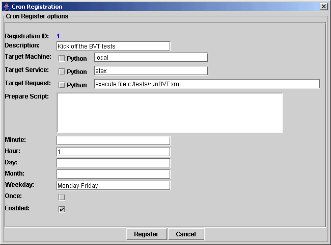
Click on the "Register" button to unregister the existing ID, and register
the updated registration data:
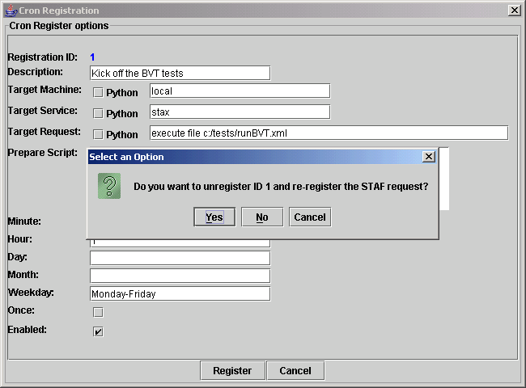
Click on yes, and you will see that the updated registration data has been saved. In this scenario, since we only had one existing registration, the ID for the updated registration is still 1. If there are already existing registration IDs, then the assigned registration id would be the next sequential ID.
To copy the information from an existing registration to a new registration, click on "Selected" in the menu bar and select "Copy to new registration", or right-click on its row in the registration table, and select "Copy to new registration" in the popup menu.
Update the information for the new registration:
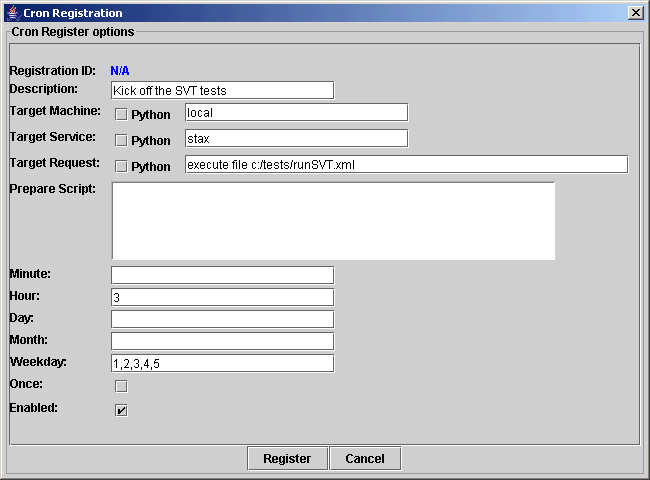
Click on the "Register" button to register.
To unregister a registration, click on "Selected" in the menu bar and select
"Unregister", or right-click on
its row in the registration table, and select "Unregister" in the popup menu.
You will get a confirmation popup:
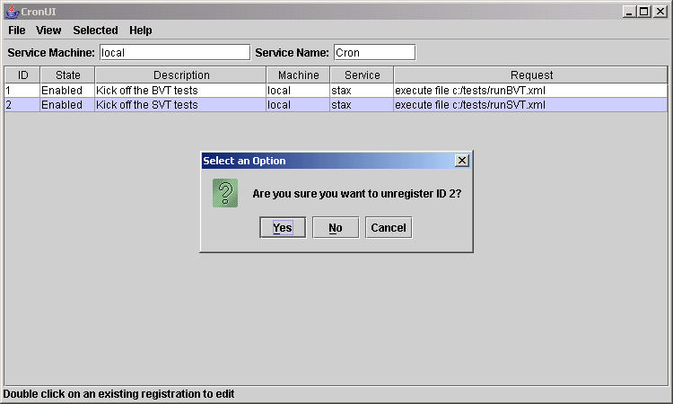
Click on "Yes" and the ID will be unregistered.
Next, let's register to have the command "java -version" executed at the
beginning of every month. In the menu bar click on "File" and then "New
Registration..." and fill in the data:
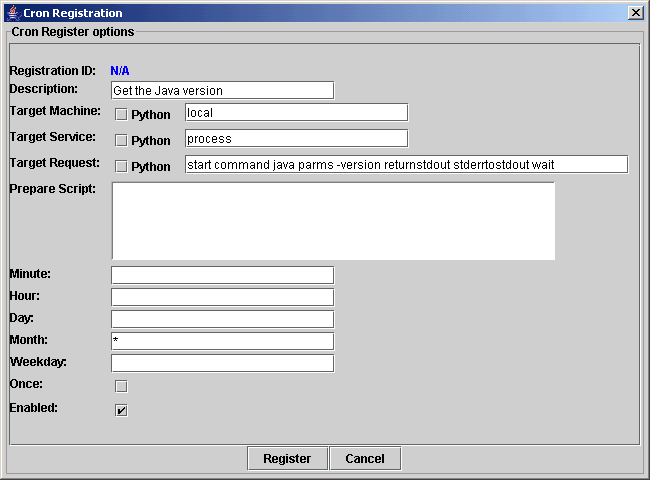
Click on the "Register" button and we will see that it has been assigned
a unique registration ID:
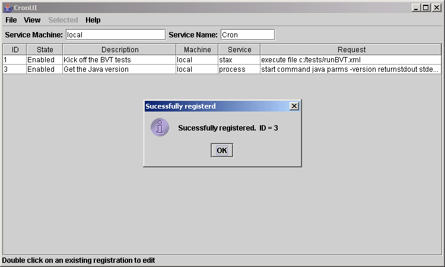
Suppose we want to test the STAF command that we just registered, and we don't want to wait until the next time the month changes. To do this, click on "Selected" in the menu bar and select "Trigger", or right-click on its row in the registration table, and select "Trigger" in the popup menu.
The STAF command will be submitted and a STAFLogViewer window will open to
display the service log entries for that STAF command:
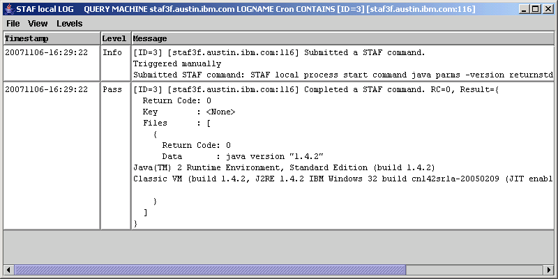
In this case, since the process returned the version immediately, the log query shows that the process has completed, and includes the information it returned.
To view the service log's entries for a particular registration ID, click
on "View" in the menu bar and then select "Service Log for ID...". In the
popup dialog, enter ID "3" and click on OK. A STAFLogViewer window will open
with all of the log entries for ID 3:
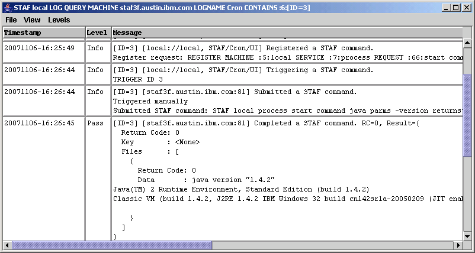
To view the last 100 entries in the service log, click on "View" in the
menu bar and then select "Service Log last 100 records". A STAFLogViewer window
will open with the last 100 entries:
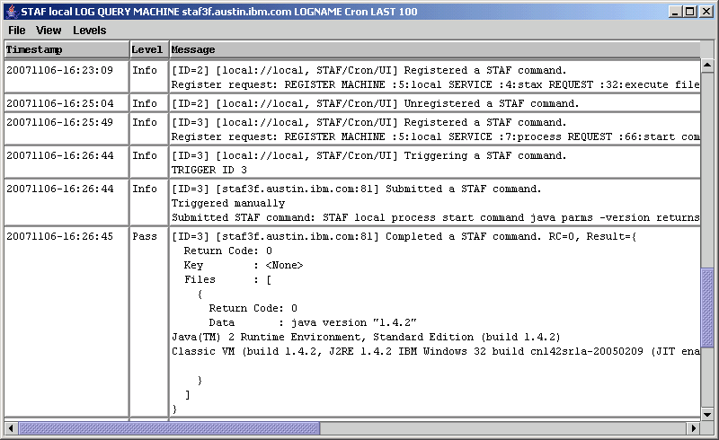
To view the log entries for a particular submitted STAF command, click on
"View" in the menu bar and then select "Service log for submitted STAF
command...". A new dialog will be displayed showing a list of all of the
submitted STAF commands:
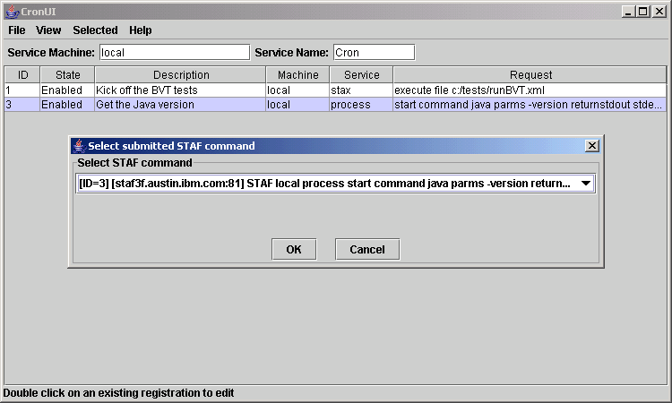
Select the submitted STAF command, and click on "OK". A STAFLogViewer
window will open with all of the log entries for that submitted STAF command:
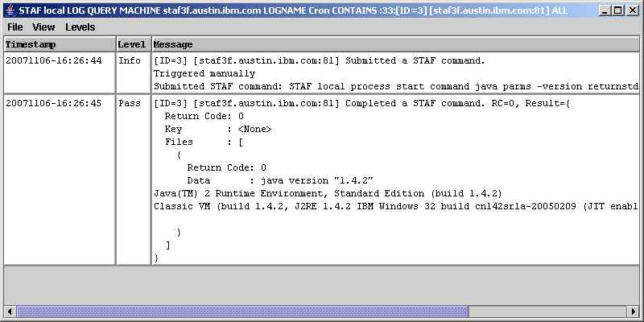
To view the entire service log, click on "View" in the menu bar and then
select "Entire Service Log". A STAFLogViewer window
will open with all of the log entries:
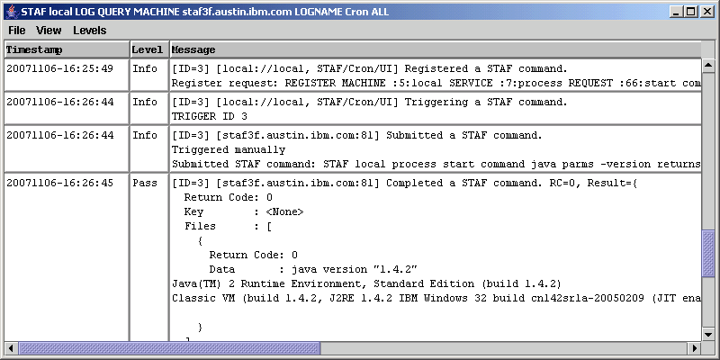
To delete the service log, click on "View" in the menu bar and then
select "Delete Service Log". You will receive a confirmation popup:
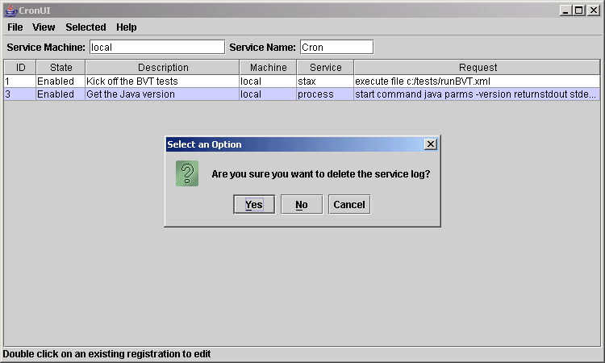
In addition to the common STAF return codes, the following Cron
return codes are defined:
Table 1. Cron Service Return Codes
| Error Code | Meaning | Comment |
|---|---|---|
| 4001 | Python error | A Python error during a TRIGGER command occurred while evaluating the request to be submitted. The result buffer will include details about the Python error. |
| 4002 | Request not submitted | The request for a TRIGGER command was not submitted because the value of STAFCronSubmit was not set to true. The result buffer will include the value of STAFCronSubmit. |
Most Python modules that are written in Python work fine in Jython. A few types of modules will not run under Jython such as:
Some standard CPython modules depend on operating system calls that are not available under Java. The most notable of these is os, which actually does run in Jython, but is missing much of its functionality.
A number of common CPython modules are implemented in C rather than Python, either for a speed boost or because the module is a C wrapper around an external C library. The C modules, or any modules that depend on them, will not run in Jython.
See the "Jython Essentials" book, written by Samuele Pedroni and Noel Rappin, for more information about the differences between Jython and CPython.
PYTHON SOFTWARE FOUNDATION LICENSE VERSION 2
--------------------------------------------
1. This LICENSE AGREEMENT is between the Python Software Foundation
("PSF"), and the Individual or Organization ("Licensee") accessing and
otherwise using this software ("Jython") in source or binary form and
its associated documentation.
2. Subject to the terms and conditions of this License Agreement, PSF
hereby grants Licensee a nonexclusive, royalty-free, world-wide
license to reproduce, analyze, test, perform and/or display publicly,
prepare derivative works, distribute, and otherwise use Jython alone
or in any derivative version, provided, however, that PSF's License
Agreement and PSF's notice of copyright, i.e., "Copyright (c) 2007
Python Software Foundation; All Rights Reserved" are retained in
Jython alone or in any derivative version prepared by Licensee.
3. In the event Licensee prepares a derivative work that is based on
or incorporates Jython or any part thereof, and wants to make
the derivative work available to others as provided herein, then
Licensee hereby agrees to include in any such work a brief summary of
the changes made to Jython.
4. PSF is making Jython available to Licensee on an "AS IS"
basis. PSF MAKES NO REPRESENTATIONS OR WARRANTIES, EXPRESS OR
IMPLIED. BY WAY OF EXAMPLE, BUT NOT LIMITATION, PSF MAKES NO AND
DISCLAIMS ANY REPRESENTATION OR WARRANTY OF MERCHANTABILITY OR FITNESS
FOR ANY PARTICULAR PURPOSE OR THAT THE USE OF JYTHON WILL NOT
INFRINGE ANY THIRD PARTY RIGHTS.
5. PSF SHALL NOT BE LIABLE TO LICENSEE OR ANY OTHER USERS OF JYTHON
FOR ANY INCIDENTAL, SPECIAL, OR CONSEQUENTIAL DAMAGES OR LOSS AS
A RESULT OF MODIFYING, DISTRIBUTING, OR OTHERWISE USING JYTHON,
OR ANY DERIVATIVE THEREOF, EVEN IF ADVISED OF THE POSSIBILITY THEREOF.
6. This License Agreement will automatically terminate upon a material
breach of its terms and conditions.
7. Nothing in this License Agreement shall be deemed to create any
relationship of agency, partnership, or joint venture between PSF and
Licensee. This License Agreement does not grant permission to use PSF
trademarks or trade name in a trademark sense to endorse or promote
products or services of Licensee, or any third party.
8. By copying, installing or otherwise using Jython, Licensee
agrees to be bound by the terms and conditions of this License
Agreement.
Jython 2.0, 2.1 License
================================
Copyright (c) 2000-2009 Jython Developers.
All rights reserved
Redistribution and use in source and binary forms, with or without
modification, are permitted provided that the following conditions
are met:
- Redistributions of source code must retain the above copyright
notice, this list of conditions and the following disclaimer.
- Redistributions in binary form must reproduce the above copyright
notice, this list of conditions and the following disclaimer in
the documentation and/or other materials provided with the distribution.
- Neither the name of the Jython Developers nor the names of
its contributors may be used to endorse or promote products
derived from this software without specific prior written permission.
THIS SOFTWARE IS PROVIDED BY THE COPYRIGHT HOLDERS AND CONTRIBUTORS
``AS IS'' AND ANY EXPRESS OR IMPLIED WARRANTIES, INCLUDING, BUT NOT
LIMITED TO, THE IMPLIED WARRANTIES OF MERCHANTABILITY AND FITNESS FOR
A PARTICULAR PURPOSE ARE DISCLAIMED. IN NO EVENT SHALL THE REGENTS OR
CONTRIBUTORS BE LIABLE FOR ANY DIRECT, INDIRECT, INCIDENTAL, SPECIAL,
EXEMPLARY, OR CONSEQUENTIAL DAMAGES (INCLUDING, BUT NOT LIMITED TO,
PROCUREMENT OF SUBSTITUTE GOODS OR SERVICES; LOSS OF USE, DATA, OR
PROFITS; OR BUSINESS INTERRUPTION) HOWEVER CAUSED AND ON ANY THEORY
OF LIABILITY, WHETHER IN CONTRACT, STRICT LIABILITY, OR TORT (INCLUDING
NEGLIGENCE OR OTHERWISE) ARISING IN ANY WAY OUT OF THE USE OF THIS
SOFTWARE, EVEN IF ADVISED OF THE POSSIBILITY OF SUCH DAMAGE.